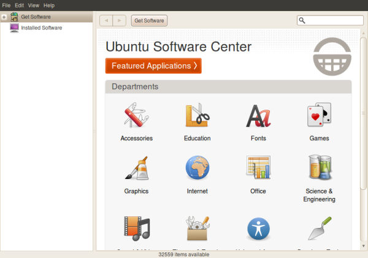

Purely Functional Package Management with Nix
Eric Rasmussen / @theerasmas
January 19, 2015
Who am I
- OSS contributor
- haskell/python/javascript developer
- works on a hybrid dev/ops team
- prior LUGOD speaker (not about Linux)
Packaging: The Good Parts
- installs in one click/command
- automatic dependency resolution

there's just one problem
Packaging: The Bad Parts
- dependency hell
- obscure errors
- high maintenance costs
tl;dr packaging is hard
Package managers
Choices (OS)
- dpkg/apt
- rpm/yum
- pacman
- homebrew
- mac ports
- various app stores
Choices (PL)
- easy_install
- pip
- go get
- maven
- npm
- rubygems
- sbt
- cabal
- package.el
- cpan
- pear
- pecl
Do we really need another?

(via http://xkcd.com/927/)
Introducing Nix
- new model for package management
- introduced in Eelco Dolstra's PhD Thesis (2006)
- based on functional programming principles
What Nix Offers
- minimal and portable
- declarative
- reproducible builds
- deterministic
Functional purity
- Function takes inputs and produces output
- Ex: Addition takes two numbers and makes a new one
- 40 + 2 = 42
Functional purity
- Most programming languages don't enforce this!
40 + 2 = = new log file with debug output = database calls = HTTP service calls... = 42, maybe?
Nix packages are pure
- Input: other packages, configuration options
- Output: a package
Example: gcc
/nix/store/r8vvq9kq18pz08v249h8my6r9vs7s0n3-gcc-4.3.6/
- inside the prefix: bin, lib, share, ... directories
- r8vvq9kq18pz08v249h8my6r9vs7s0n3 is a hash of function inputs
Purity in Nix
- no global install directories (/usr, /bin)
- /nix/store is immutable (mounted read-only)
- nix expressions cannot write to files
Impurity in Nix
- packages can make network calls (curl/git clone/etc)
- race conditions in parallel builds
- stdenv on OS X depends on globals
Example: nginx
{ stdenv, fetchurl, fetchgit, openssl, zlib, pcre, libxml2, libxslt, expat }:
stdenv.mkDerivation rec {
name = "nginx-${version}";
version = "1.4.4";
src = fetchurl {
url = "http://nginx.org/download/nginx-${version}.tar.gz";
sha256 = "1f82845mpgmhvm151fhn2cnqjggw9w7cvsqbva9rb320wmc9m63w";
};
buildInputs = [ openssl zlib pcre libxml2 libxslt ];
configureFlags = [ "--with-http_spdy_module" ];
postInstall = "mv $out/sbin $out/bin";
meta = with stdenv.lib; {
description = "A reverse proxy and lightweight webserver";
maintainers = [ maintainers.iElectric ];
platforms = platforms.all;
license = licenses.bsd2;
};Binary Packages
- binary packages are built in hydra build farms
- purity lets us substitute pre-built packages based on the hash
- major speedups when installing on common platforms
Add Nix to your workflow in 2 Days
- Day 1: install a package
- Day 2: myEnvFun
Day 1: installation
$ curl -L http://git.io/nix-install.sh | bash
$ source ~/.nix-profile/etc/profile.d/nix.sh
$ nix-env -i nginx
Day 2: config.nix / myEnvFun
- Note: fun is for "functional" (having fun is optional)
# ~/.nixpkgs/config.nix
{
packageOverrides = pkgs : with pkgs; {
pyred2 = pkgs.myEnvFun {
name = "pyred2";
buildInputs = [ python27Full redis ];
};
pyred3 = pkgs.myEnvFun {
name = "pyred3";
buildInputs = [ python3 redis ];
};
};
}Using myEnvFun
$ nix-env -i env-pyred2
$ load-env-pyred2
env-pyred2 loaded
pyred2:[eric@nixos:~]$ python
python python2.7 python2-config
python2 python2.7-config python-configEasy to uninstall if needed
$ rm -rf /nix
$ rm -rf ~/nix-profile/
intermission
NixOS
- Declarative config at the system level
- Nix as package manager
- Nix expressions to configure the OS
NixOS
- stateless config management
- NixOS modules for services
configuration.nix
{ config, pkgs, ... }: with pkgs;
{
networking.firewall.allowedTCPPorts = [ 8000 ];
services.postgresql = {
enable = true;
package = pkgs.postgresql93;
authentication = pkgs.lib.mkOverride 10 ''
local postgres root ident
host myuser myuser 127.0.0.1/32 password
local all all ident
'';
initialScript = "bootstrap_or_something.sql";
};
environment.systemPackages = [ emacs24-nox git tmux ghc.ghc783 ];
}
}Enforcing good habits
- Harder to make one-off hacks
- Config and build changes must be codified
- Example: add hosts to /etc/hosts
# configuration.nix
# will extend /etc/hosts
networking.extraHosts = ''
some_ip some_host
some_ip2 some_host2
'';Is NixOS for me?
- maybe!
- requires learning nix/writing packages
- great IRC support but few docs/tutorials
Is Nix for me?
- try it out!
- won't interfere with existing packages